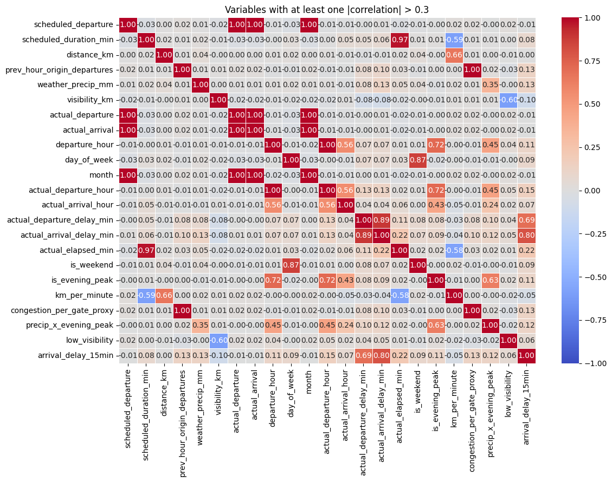
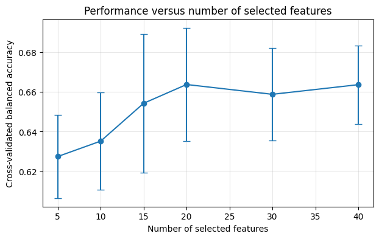

| scheduled_departure | carrier | origin | destination | aircraft_type | scheduled_duration_min | distance_km | prev_hour_origin_departures | weather_wind_kmh | weather_precip_mm | visibility_km | baggage_load_kg | noise_random_1 | noise_random_2 | actual_departure | actual_arrival | |
|---|---|---|---|---|---|---|---|---|---|---|---|---|---|---|---|---|
| 0 | 2025-02-02 15:05:00 | DTA | JFK | MIA | A321 | 110.512352 | 817.635735 | 15 | 13.194911 | 2.734495 | 12.569336 | 4581.412148 | 0.324653 | -0.309169 | 2025-02-02 15:11:00.275901222 | 2025-02-02 17:02:15.457055862 |
| 1 | 2025-10-10 09:25:00 | ECO | LAX | ATL | B737 | 186.906015 | 1196.839476 | 18 | 15.393482 | 4.922769 | 8.661092 | 4321.840787 | 1.357950 | 0.337125 | 2025-10-10 09:24:04.609407672 | 2025-10-10 12:34:08.178684078 |
| 2 | 2025-08-27 19:35:00 | CTY | SFO | PHX | E190 | 183.661116 | 1298.763124 | 21 | 6.074298 | 0.879508 | 11.172557 | 5143.883406 | -0.414977 | 1.272568 | 2025-08-27 19:31:38.859671472 | 2025-08-27 22:19:35.809267008 |
Data-Centric AI (Module II)
From Domain Features to Automated Feature Selection
Matteo Francia
DISI — University of Bologna
m.francia@unibo.it
DISI — University of Bologna
m.francia@unibo.it
Learning outcomes
By the end of this notebook, you should be able to:
- Create reproducible manual features.
- Integrate feature construction into a pipeline.
- Distinguish feature engineering from feature selection.
- Compare filter and wrapper selection methods.
- Evaluate predictive performance, stability, and computational cost.
1. Feature engineering versus feature selection
Feature engineering creates candidate inputs for a model. It turns domain knowledge into measurable variables: ratios, differences, calendar effects, interaction terms, nonlinear transformations, and aggregations.
Feature selection chooses a subset of candidate inputs. It tries to keep signal while removing redundancy, noise, computational cost, and sources of overfitting.
A useful feature usually has at least one of these properties:
- It carries signal about the target.
- It is not just a duplicate of another feature.
- It is stable across samples, folds, and time periods.
- It is available at the moment the model is used.
- It does not encode the answer through leakage.
Feature engineering introduces hypotheses about the problem; feature selection controls complexity. Neither should inspect validation or test data.
2. Flight delay prediction
The synthetic dataset predicts whether a flight arrives at least 15 minutes late.
Data understanding
Data understanding
<class 'pandas.DataFrame'>
RangeIndex: 3500 entries, 0 to 3499
Data columns (total 16 columns):
# Column Non-Null Count Dtype
--- ------ -------------- -----
0 scheduled_departure 3500 non-null datetime64[us]
1 carrier 3500 non-null str
2 origin 3500 non-null str
3 destination 3500 non-null str
4 aircraft_type 3500 non-null str
5 scheduled_duration_min 3500 non-null float64
6 distance_km 3500 non-null float64
7 prev_hour_origin_departures 3500 non-null int64
8 weather_wind_kmh 3500 non-null float64
9 weather_precip_mm 3500 non-null float64
10 visibility_km 3500 non-null float64
11 baggage_load_kg 3500 non-null float64
12 noise_random_1 3500 non-null float64
13 noise_random_2 3500 non-null float64
14 actual_departure 3500 non-null datetime64[ns]
15 actual_arrival 3500 non-null datetime64[ns]
dtypes: datetime64[ns](2), datetime64[us](1), float64(8), int64(1), str(4)
memory usage: 437.6 KBThe key modeling question is operational: when will the prediction be made?
Prediction time matters
- Ticket sale: route, carrier, season, schedule.
- Morning of travel: forecasts and known schedule pressure.
- Gate before departure: current weather and inbound status.
- After departure: actual delay may be inferred.
- After landing: actual delay is known.
5. Manual feature engineering
The following transformer creates domain-inspired features from raw columns:
departure_hour,day_of_week,month,is_weekend, andis_evening_peak: scheduled date/time decomposition.km_per_minute: a ratio between distance and scheduled duration.congestion_per_gate_proxy: a normalized congestion proxy.precip_x_evening_peak: an interaction between bad weather and an operationally busy period.low_visibility: a nonlinear threshold feature.
Each of these encodes a hypothesis.
- For example, evening flights may accumulate delays from earlier flights, and precipitation may be worse during peak operating hours.
- The transformer also has an
include_actual_timesoption. It is disabled by default because actual departure and arrival times are not known before departure. Turn it on only to demonstrate leakage.
Data understanding and visualization
Code
import numpy as np
import pandas as pd
import seaborn as sns
import matplotlib.pyplot as plt
def check_correlations(X, y):
# Combine engineered X and target y
df_corr = pd.concat(
[
FlightFeatureEngineer(
add_manual_features=True,
include_actual_times=False,
drop_datetime=False,
).transform(X),
y,
],
axis=1,
).copy()
# Convert datetime columns to Unix timestamps in seconds
for col in df_corr.select_dtypes(include=["datetime", "datetime64"]).columns:
df_corr[col] = df_corr[col].astype("int64") // 10**9
# Compute correlation matrix
corr = df_corr.corr(numeric_only=True)
# Ignore identity correlations
non_identity = ~np.eye(len(corr), dtype=bool)
# Keep variables with at least one non-identity |correlation| > 0.3
keep = (corr.abs().gt(0.3) & non_identity).any(axis=1)
# Always retain the y column(s)
y_columns = [y.name] if isinstance(y, pd.Series) else list(y.columns)
keep.loc[corr.index.intersection(y_columns)] = True
filtered_corr = corr.loc[keep, keep]
# Plot filtered correlation matrix
if filtered_corr.empty:
print("No non-identity correlations with |correlation| > 0.3.")
else:
plt.figure(figsize=(12, 9))
sns.heatmap(
filtered_corr,
annot=True,
fmt=".2f",
cmap="coolwarm",
vmin=-1,
vmax=1,
linewidths=0.5,
)
plt.title("Variables with at least one |correlation| > 0.3")
plt.tight_layout()
plt.show()
Data understanding and visualization

Schema for feature discussion
Before fitting models, inspect the raw and engineered schema. The goal is not only to know the data types, but to decide which columns are available at prediction time and which ones would leak future information.
Use the schema table to ask: can this column exist at prediction time, and did we create it manually or from future data?
| feature | dtype | source | feature_family | availability | predeparture_decision | leakage_risk | |
|---|---|---|---|---|---|---|---|
| 0 | scheduled_departure | datetime64[us] | raw | raw input | known before departure | candidate | low |
| 1 | carrier | str | raw | raw input | known before departure | candidate | low |
| 2 | origin | str | raw | raw input | known before departure | candidate | low |
| 3 | destination | str | raw | raw input | known before departure | candidate | low |
| 4 | aircraft_type | str | raw | raw input | known before departure | candidate | low |
| 5 | scheduled_duration_min | float64 | raw | raw input | known before departure | candidate | low |
| 6 | distance_km | float64 | raw | raw input | known before departure | candidate | low |
| 7 | prev_hour_origin_departures | int64 | raw | raw input | known before departure | candidate | low |
| 8 | weather_wind_kmh | float64 | raw | raw input | known before departure | candidate | low |
| 9 | weather_precip_mm | float64 | raw | raw input | known before departure | candidate | low |
| 10 | visibility_km | float64 | raw | raw input | known before departure | candidate | low |
| 11 | baggage_load_kg | float64 | raw | raw input | known before departure | candidate | low |
| 12 | noise_random_1 | float64 | raw | raw input | known before departure | candidate | low |
| 13 | noise_random_2 | float64 | raw | raw input | known before departure | candidate | low |
| 14 | actual_departure | datetime64[ns] | raw | actual-time leakage | known only after departure | drop | high |
| 15 | actual_arrival | datetime64[ns] | raw | actual-time leakage | known only after arrival | drop | high |
6. Baseline preprocessing pipeline
ColumnTransformer lets us apply different preprocessing to numerical and categorical columns after feature engineering. The selectors below infer column groups from the transformed dataframe, so the same pipeline works with and without the manual features.
The preprocessor discovers numerical and categorical columns after feature engineering, keeping the pipeline flexible.
7. Automated feature selection
We compare two families of selectors:
- Filter methods rank features using a statistical criterion independent of the final model. Here we use mutual information with
SelectKBest. - Wrapper methods search for a subset by repeatedly fitting a model. Here we use
SequentialFeatureSelectorandRFE.
Filter methods are usually faster. Wrapper methods can capture model-specific usefulness, but they are more computationally expensive.
Important: selection is inside the pipeline. During cross-validation, the selector is fitted only on each training fold.
Selection is part of model fitting. Keeping it inside the pipeline prevents validation-fold information from guiding the selected features.
Code
# Configure one filter selector and two wrapper selectors for comparison.
from sklearn.feature_selection import SequentialFeatureSelector
filter_selector = SelectKBest(score_func=mutual_info_reproducible, k=20)
wrapper_selector = SequentialFeatureSelector(
estimator=make_logistic(max_iter=800),
n_features_to_select=20,
direction="forward",
scoring="balanced_accuracy",
cv=3,
n_jobs=-1,
)
rfe_selector = RFE(
estimator=make_logistic(max_iter=800),
n_features_to_select=20,
step=0.2,
)8. Compare raw, engineered, and selected feature sets
We measure predictive performance, number of selected features, and training time. We also keep the fitted estimators from cross-validation so we can inspect selection stability.
The experiment table compares predictive value, selected feature count, and runtime rather than optimizing only one number.
| experiment | balanced_accuracy_mean | balanced_accuracy_std | f1_mean | features_mean | features_std | fit_time_total_sec | |
|---|---|---|---|---|---|---|---|
| 0 | raw features | 0.663987 | 0.018400 | 0.532392 | 34.0 | 0.0 | 2.114142 |
| 4 | manual + filter selection | 0.663819 | 0.028676 | 0.531587 | 20.0 | 0.0 | 0.799796 |
| 1 | manual features | 0.663736 | 0.019865 | 0.531912 | 40.0 | 0.0 | 0.155019 |
| 5 | manual + RFE | 0.663422 | 0.016417 | 0.531696 | 20.0 | 0.0 | 0.170537 |
| 3 | wrapper selection | 0.658847 | 0.018524 | 0.526310 | 20.0 | 0.0 | 25.721692 |
| 2 | filter selection | 0.650180 | 0.015573 | 0.515650 | 20.0 | 0.0 | 0.681235 |
9. Actual departure and arrival times: keep or drop?
For this pre-departure prediction task, actual_departure and actual_arrival should be dropped. They are measured after the moment when the model is supposed to make its prediction.
However, they are useful teaching columns because they let us ask a precise operational question: what information exists at prediction time?
- Keep scheduled departure time: it is known before the flight.
- Usually drop actual departure time: it is known only after pushback/takeoff.
- Drop actual arrival time: it is known only after the flight has arrived.
- Drop engineered features derived from actual times, such as actual departure delay, actual arrival delay, or actual elapsed time.
The next cell intentionally compares a leakage-safe pipeline with a pipeline that uses actual-time-derived features. If the second pipeline looks much better, that is a warning sign, not a success.
The leakage comparison should look suspiciously strong when actual-time information is included.
Code
# Demonstrate how future information can inflate validation metrics.
leakage_demo = {
"safe pre-departure features": make_pipeline(add_manual_features=True),
"DO NOT USE: actual-time features": make_pipeline(add_manual_features=True, include_actual_times=True),
}
leakage_rows = []
for name, estimator in leakage_demo.items():
result = cross_validate(estimator, X, y, cv=cv, scoring=scoring, n_jobs=-1)
leakage_rows.append({
"experiment": name,
"balanced_accuracy_mean": result["test_balanced_accuracy"].mean(),
"f1_mean": result["test_f1"].mean(),
})
display(pd.DataFrame(leakage_rows))| experiment | balanced_accuracy_mean | f1_mean | |
|---|---|---|---|
| 0 | safe pre-departure features | 0.663736 | 0.531912 |
| 1 | DO NOT USE: actual-time features | 0.964664 | 0.948049 |
10. Selection stability across folds
A selector is more trustworthy when it keeps similar features across folds. Instability does not always mean the selector is wrong: correlated features may be interchangeable. But instability should make us cautious when interpreting selected variables as domain truth.
Stability is an interpretation check: selected features that change across folds should be discussed cautiously.
| experiment | mean_jaccard_similarity | example_selected_features | |
|---|---|---|---|
| 3 | manual + RFE | 0.712042 | [aircraft_type_E190, carrier_ALP, carrier_BLU,... |
| 1 | wrapper selection | 0.491867 | [aircraft_type_A321, aircraft_type_B738, aircr... |
| 0 | filter selection | 0.470491 | [aircraft_type_A320, aircraft_type_A321, aircr... |
| 2 | manual + filter selection | 0.392968 | [aircraft_type_B737, aircraft_type_B738, aircr... |
11. Performance versus number of features
A useful visualization is a performance-versus-number-of-features curve. Here we vary k for SelectKBest. A good choice is not necessarily the highest possible balanced accuracy: we may prefer a smaller model when the performance loss is negligible.
This curve helps students look for diminishing returns as more features are selected.
| k | balanced_accuracy_mean | balanced_accuracy_std | |
|---|---|---|---|
| 0 | 5 | 0.627403 | 0.021024 |
| 1 | 10 | 0.635198 | 0.024745 |
| 2 | 15 | 0.654321 | 0.035097 |
| 3 | 20 | 0.663819 | 0.028676 |
| 4 | 30 | 0.658858 | 0.023292 |
| 5 | 40 | 0.663736 | 0.019865 |

12. Interpretability check
After choosing a pipeline, fit it once on a training split and inspect which features are selected. This final inspection is for interpretation, not for deciding the reported cross-validation score.
Fit once on a holdout split only after cross-validation has motivated a candidate pipeline.
Holdout balanced accuracy: 0.611| selected_feature | |
|---|---|
| 0 | aircraft_type_B737 |
| 1 | baggage_load_kg |
| 2 | carrier_ALP |
| 3 | carrier_BLU |
| 4 | carrier_DTA |
| 5 | congestion_per_gate_proxy |
| 6 | departure_hour |
| 7 | destination_MSP |
| 8 | destination_PHX |
| 9 | distance_km |
| 10 | is_evening_peak |
| 11 | is_weekend |
| 12 | noise_random_2 |
| 13 | origin_LAX |
| 14 | origin_SEA |
| 15 | origin_SFO |
| 16 | scheduled_duration_min |
| 17 | visibility_km |
| 18 | weather_precip_mm |
| 19 | weather_wind_kmh |
Optional: permutation importance estimates how much the fitted pipeline depends on each raw input column. This is different from selected one-hot or engineered features, but it is useful for discussing model behavior at the original data level.
Permutation importance answers a different question from feature selection: which raw inputs the fitted pipeline relies on most.
| raw_feature | importance_mean | importance_std | |
|---|---|---|---|
| 8 | weather_wind_kmh | 0.046703 | 0.017847 |
| 10 | visibility_km | 0.016205 | 0.009807 |
| 9 | weather_precip_mm | 0.002760 | 0.007388 |
| 12 | noise_random_1 | 0.000000 | 0.000000 |
| 14 | actual_departure | 0.000000 | 0.000000 |
| 15 | actual_arrival | 0.000000 | 0.000000 |
| 7 | prev_hour_origin_departures | -0.001196 | 0.007639 |
| 11 | baggage_load_kg | -0.001423 | 0.002013 |
| 6 | distance_km | -0.002482 | 0.003777 |
| 2 | origin | -0.003068 | 0.002374 |
| 1 | carrier | -0.005024 | 0.010081 |
| 3 | destination | -0.005721 | 0.003305 |
13. Student challenge
Create at least three domain-inspired features. For each feature, answer:
- What hypothesis does the feature encode?
- Does it improve cross-validated performance?
- Is the improvement consistent across folds?
- Does automated selection keep or remove it?
- Could the feature introduce leakage?
Ideas to try:
- A morning, afternoon, evening, and night departure period.
- A holiday-season indicator.
- Route-level historical delay rates, computed only inside training folds.
- A severe-weather indicator combining wind, precipitation, and visibility.
- Carrier-by-origin interaction categories.
Be careful with historical aggregates. If you compute route delay rate using the whole dataset before cross-validation, you leak validation-fold labels into the training features. To use target-based aggregates safely, implement them as a transformer fitted inside the pipeline.
The challenge asks students to connect feature ideas to evidence, not just to add columns.
Code
# Use this table to record feature hypotheses and evidence during the challenge.
# Challenge workspace
# 1. Extend FlightFeatureEngineer with your own features.
# 2. Re-run the experiments table.
# 3. Explain whether each feature was useful, stable, selected, and leakage-safe.
student_notes = pd.DataFrame({
"feature": ["", "", ""],
"hypothesis": ["", "", ""],
"cv_improvement": ["", "", ""],
"kept_by_selection": ["", "", ""],
"leakage_risk": ["", "", ""],
})
display(student_notes)| feature | hypothesis | cv_improvement | kept_by_selection | leakage_risk | |
|---|---|---|---|---|---|
| 0 | |||||
| 1 | |||||
| 2 |
14. Takeaway
Feature engineering is a way to encode assumptions about how the world works. Feature selection is a way to control complexity once we have many candidate features.
Both steps are part of model training. To obtain an honest estimate of performance, fit engineering steps that learn from data, preprocessing, and feature selection inside cross-validation, not before it.